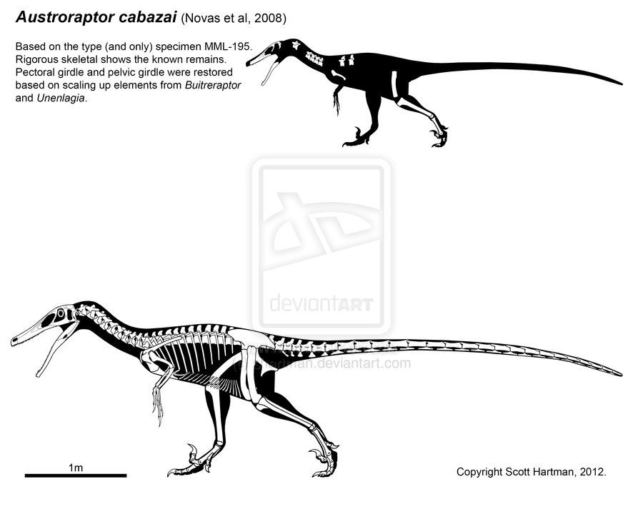

Austroraptor un veloz asesino con dientes de sierra
Publicado el 03-02-2020
El género Austroraptor englobó a una serie de especies de dinosaurios saurisquios terópodos dromeosáuridos que vivieron durante el Período Cretácico. Como dromeosáuridos, se caracterizaban por un cuerpo ágil y con una garra en forma de hoz en sus extremidades posteriores. El Austroraptor medía unos 6 metros de largo, un metro y medio de alto, llegando a medir como máximo 2 metros, y contaba con un peso de 400 kilogramos. A pesar de estas reducidas dimensiones (en comparación a la media de los dinosaurios) es uno de los dinosaurio dromeosáurido más grande que se ha hallado.
Los fósiles de este dinosaurio proporcionan nueva información sobre la evolución de los Unenlagiinae, un grupo de terópodos de Gondwana. El nuevo dinosaurio es el dromeosáurido más grande descubierto en el hemisferio sur. Austroraptor posee características craneales y postcraneales extrañas. Su hocico es largo y bajo, con numerosos dientes pequeños y cónicos, una condición que se asemeja a los espinosáuridos. Sus antebrazos cortos se apartan de la condición característica de largos brazos de todos los dromeosáuridos y de sus parientes aviares cercanos. La corta longitud relativa de sus brazos ha causado que Austroraptor sea comparado a otros dinosaurios de brazos cortos más famosos, como el Tyrannosaurus.2

- Nombre:Austroraptor
- Dieta: carnivoro
- Peso: 400 kilos
- Periodo: Cretácico
- Lugar de descubrimiento: Argentina
- Longitud: 6 metros